Python 学习笔记
整理 Python 语法、常用库、文件处理和编程基础，作为后续深度学习实践的底座。
- 缩进
- 注释
- 命名
- 保留字
- 模块化
- 格式化字符串
- 三引号
- format方法
- f-字符串
- 输入函数
- 赋值语句
- 输出函数
- 循环
- for循环
- while循环
- 交互模式
- 函数
- 对库函数引用的方式
- 函数定义
- 函数的调用和返回值
- 改变参数值的函数
- 函数与程序 结构/递归
- DRY
- 引入模块
- 高阶函数
- 匿名函数
- 类型
- 未知类型
- 数字类型
- 复数类型complex（）
- 浮点数类型float（）
- 字符串类型
- 索引
- 字符串操作方法：
- 布尔类型
- 空值类型None Type
- 元组类型
- 特点：
- 列表类型
- 字典类型
- 字典的操作
- 切片(slice)语法
- 方法和函数
- 分支
- 简单分支
- 二分支语法结构
- 多分支决策
- 异常处理
- 基本循环结构
- for循环
- 死循环和循环嵌套
- 后测循环实现
- 半路循环
- 半路循环-哨兵
- 布尔表达式
- 面向对象编程
- 特性
- 封装
- 继承
- 多态
- 实例
- 文件
- 文件的基础
- 文件的基本处理
- 异常
- 异常类型
- 捕捉异常
- 测试
- unittest
- 常用
- random
- 数据分析三大库
- matplotlib
- Matplotlib三层结构
- 折线图与基础绘图
- 常见图形绘制
- Numpy
- 性质
- 示例 1
- 示例 2
- 运算
- 统计运算
- 数组间运算
- Pandas
- 引入
- DataFrame
- 基本操作
- 未看2.案例电影数据
缩进
1个缩进=4个空格
注释
两种方法： 单行注释以#开头 多行注释以'''开头和结尾 快捷键：command+/
命名
命名规则使用大小写字母，数字和下划线的组合，但首字母只能是大小写字母或下划线，不能使用空格。 中文等非字母符号也可以作为名字。 下划线命名法： 1.字母全部小写 2.不同单词用下划线分隔
保留字
33个关键字
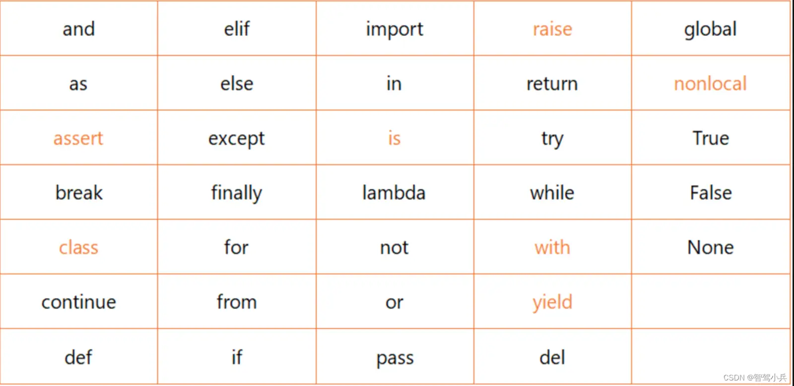
保留字in是一个二元关系操作，它用来判断左侧内容是否在右侧内容的集合中。 保留字import用来引用外部库。 保留字def用于定义函数。def定义的函数未经调用不能执行，需要通过函数名调用。print（）函数可以用来输出空行 def定义的函数未经调用不能执行，需要通过函数名调用。
展开代码PYTHON
print("Dad!!!")字符串连接（+）
展开代码PYTHON
print("hello"+" world"+"!")模块化
展开代码PYTHON
# 只有直接运行这个文件时才执行
if __name__ ** "__main__":
cook()格式化字符串
三引号
Python会把新的一行当成内容的换行
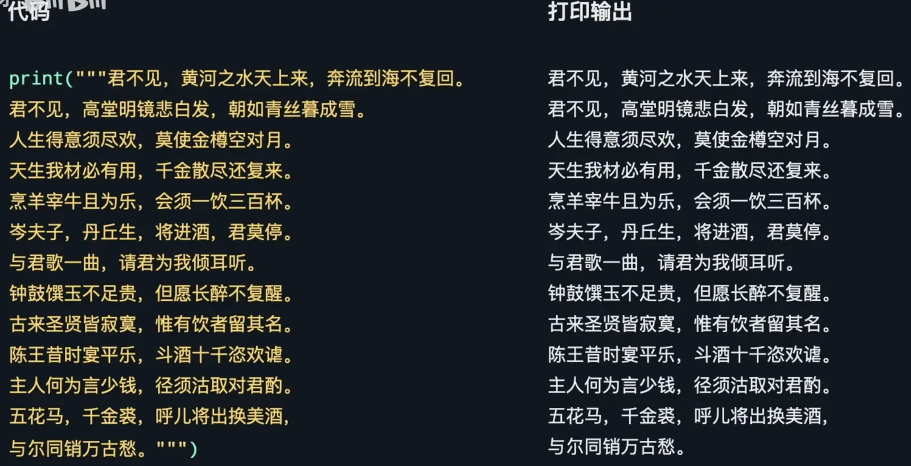
format方法
根据位置放参
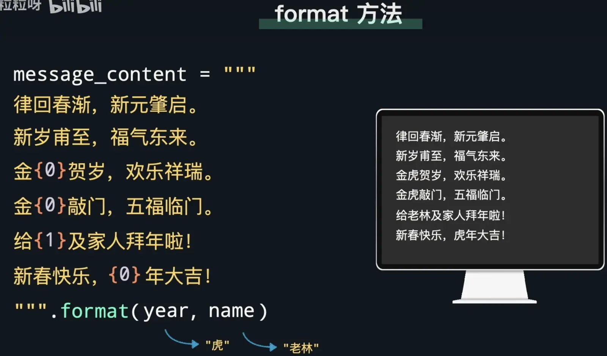
根据关键词放参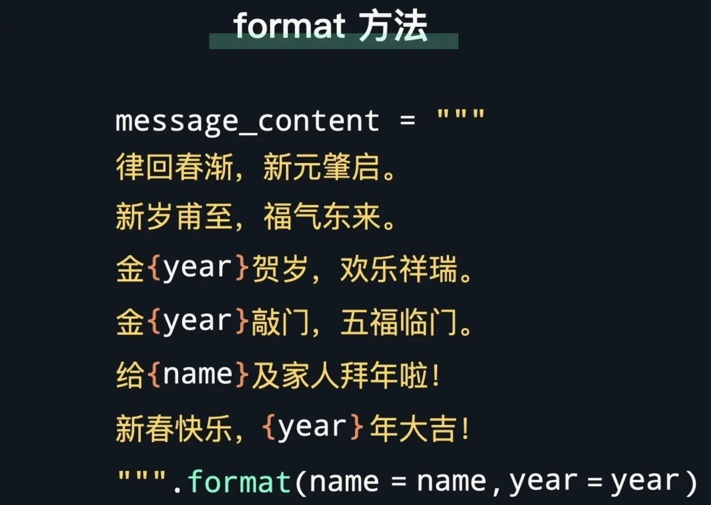
f-字符串
变量会直接求值添加到字符串内。
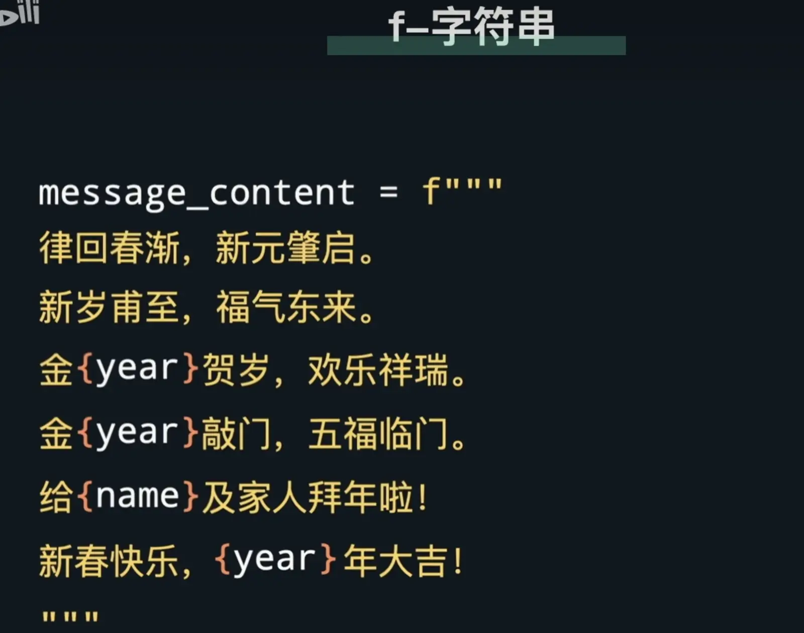
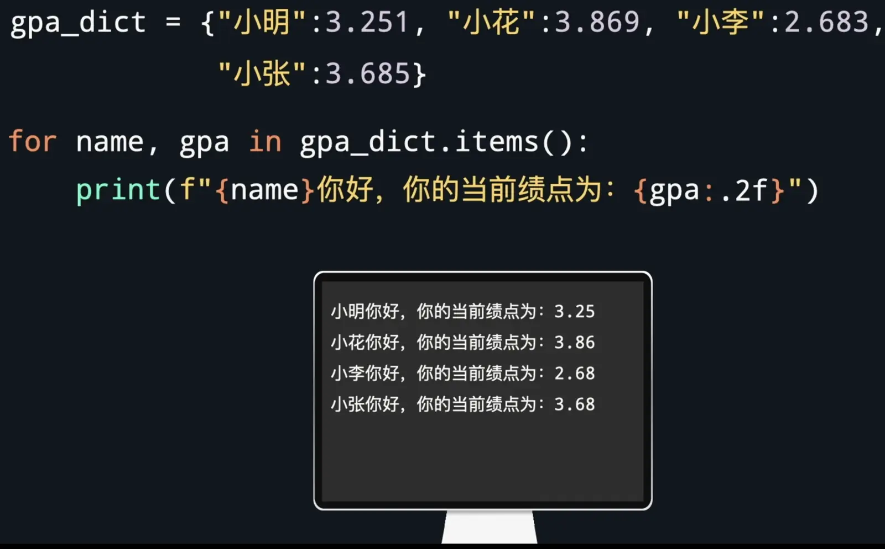
:.2f是指数字会保留两位小数。
输入函数
Input（）函数从控制台获得用户输入。 使用方法：<变量>=Input(<提示性文字>) 获得的用户变量输入以字符串形式保存在<变量>中。 第一个字节的索引值为0或-L，最后一个字节的索引值为L-1或-1
赋值语句
同步赋值指同时给多个变量赋值，即先运算右侧N个表达式，然后同时将表达式结果赋值给左侧。 <变量1>，……，<变量n>=<表达式1>,……<表达式n>
展开代码PYTHON
my_love="祁煜"输出函数
通过%选择要输出的变量
循环
for循环
展开代码PYTHON
for 变量名 in 可迭代对象：
表达式计数循环基本过程
展开代码PYTHON
for i in range（<计数值>)：
<表达式组>range函数语法：range（start，stop，step】 结束值不在序列的范围内。
while循环
展开代码PYTHON
while 条件：
行动交互模式
输入python3 直接输入赋值好的变量名，即可的结果，无需print 退出：quit（）或control+D
函数
对库函数引用的方式
第一种方式在程序头部增加： import <库名>
展开代码PYTHON
import math引用库里的函数： <库名>.<函数名>(参数)
展开代码PYTHON
math.sin(1)第二种引用方式：
展开代码PYTHON
from<库名>import<函数名>
from<库名>import*可直接使用库中的函数：
展开代码PYTHON
<函数名>（参数）函数定义
函数定义：使用def语句
展开代码PYTHON
def <name>(<parameters>):
<body>形式参数：定义函数时，函数名后面圆括号中的变量。形参只在函数内部有效。 实际参数：调用函数时，函数名后面圆括号中的变量。 函数调用的一般形式：<name>(<parameters>) 函数接口：返回值和参数 函数传递信息主要途径 通过函数返回值的方式传递信息 通过参数传递信息
函数的调用和返回值
无返回值的return语句等价于return None None是表示没有任何东西的特殊类型
改变参数值的函数
Python的参数是通过值来传递的。 如果变量是可变对象（列表或图形对象），返回到调用程序后，该对象会呈现被修改后的状态。
函数与程序 结构/递归
递归：函数定义中使用函数自身的方法。 典例：阶乘，0的阶乘：定义为1
展开代码PYTHON
def fact（n）：
if n**0：
return 1
else：
return n*fact（n-1）字符串反转 Python列表有反转的内置方法。 方法1:字符串转化为字符列表，反转列表，列表转化为字符串 方法2:递归 构造递归函数，需要基例。基例不进行递归，否则递归就会无限循环进行。
DRY
软件开发原则：Don’t Repeat Yourself. 函数
引入模块
求中位数
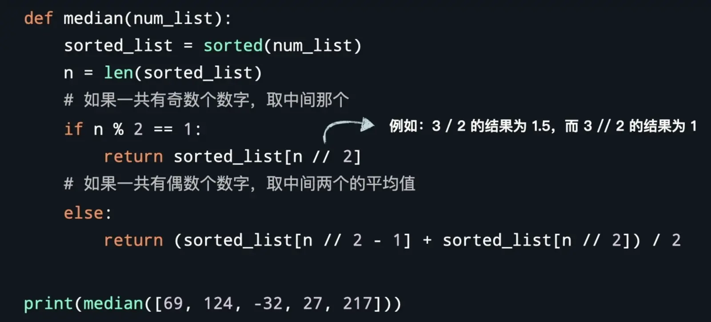
statistics–数学统计函数 引入见库函数引入高阶函数
把函数作为参数的函数 作为参数的函数是直接用函数名传入，不能带（），带（）就是函数调用后返回的结果 可以把格式化函数也作为高阶函数的参数传入
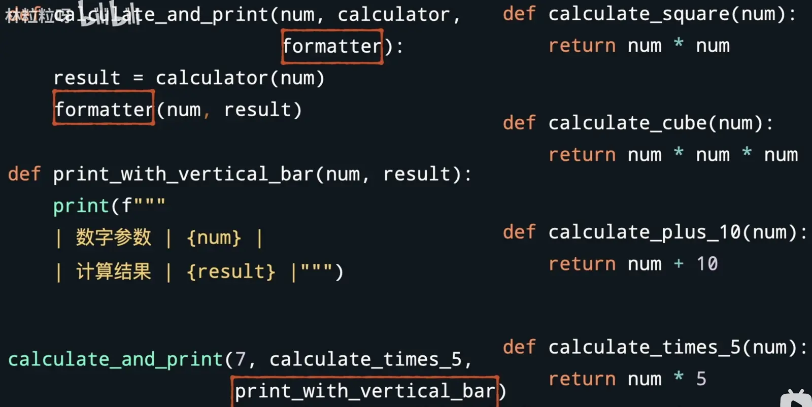
匿名函数
Lambda
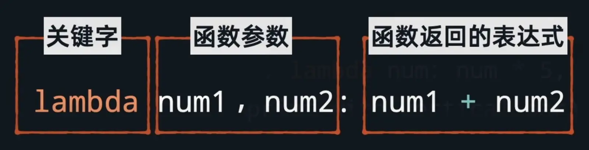
展开代码PYTHON
(lambda num1, num2: num1 + num2)(2, 3)局限性： :后只能有一个语句/表达式
类型
类型是编程语言对数据的一种划分。 Python语言的类型： 数字类型，字符串类型，元组类型，列表类型，文件类型，字典类型。
未知类型
type（）函数确定对象类型
数字类型
整数类型int（） 传参后可以将其变为整型 pow（x，y）函数：计算x^y 0x,0X开头表示16进制数 0b,0B开头表示2进制数 0o,0O开头表示8进制数
复数类型complex（）
对于复数z,可用z.real获得实数部分，z.imag获得虚数部分。 不同数字类型之间可以进行混合运算。 不支持直接将复数转换为浮点数和整数。可通过z.real，z.imag分别转换。
浮点数类型float（）
Python语言中浮点数的数值范围存在限制，小数精度也存在限制，这种限制与不同计算机系统有关。 科学计数法： <a>e<b>=a*10^b
字符串类型
字符串是用“ ”或‘ ’括起来的一个或多个字符。 str1= 字符串可以保存在变量中，也可以单独存在。 可以用type（）函数测试一个字符串的类型。 转义符：\ len（）函数能返回一个字符串的长度。 完整的转义符才占一个长度 字符串之间可以通过+或*进行连接 大多数数据类型都可以通过str（）函数转换为字符串
索引
字符串中的编号叫做“索引”。 字符串是一个字符序列：字符串最左端位置标记为0，依次增加。 单个索引辅助访问字符串中的特定位置。 <string>[<索引>] <string>[<start>:<end>] start和end都是整数型数值，不包括end位置。
字符串操作方法：
<string>.func() 遍历字符串中每个字符 for<var>in<string>:
布尔类型
True False
空值类型None Type
None 当不确定某个变量的值，就可以先定义为None
元组类型
元组是包含多个元素的类型，元素之间用逗号分割。 () 元组外侧可以使用括号，也可以不使用。
特点：
元组中元素可以是不同类型 元组中各元素存在先后关系，可以通过索引访问元组中元素。 元组定义后不能更改也不能删除。 可索引，可使用+或*进行运算。
列表类型
用[]表示，增加元素使用append，变量.append() 删除使用remove 列表是可变的，在于使用方法后原列表发生变化 列表是有序的元素集合，可以存放不同类型的数据。 列表中元素可通过索引访问单个元素 内置函数max，min，sorted 字符串可以通过split（）函数，将字符串拆分成一个列表。
字典类型
针对非序列集合而提供的一种数据类型 <键><值>对 空字典用{}表示。 字典是一个键值对的集合，以键为索引，同一个键信息对应一个值。 键（key）：值（value）
字典的操作
获取某个键的值，字典名[键]。通过任意键查找集合中值信息的过程叫映射。 键的类型必须是不可变的。 字典是可变的，字典名[键]=值，就是更新和添加操作。 判断是否存在，键 in 字典名，返回bool值。 删除，del 字典名[键]。 个数，len(字典名)。 字典名.keys()，所有键。 字典名.values()，所有值。 字典名.items()，所有键值对。 字典的遍历
展开代码PYTHON
for key in dictionaryName：
print（key+“：“+str（dictionaryName[key]））字典的标准操作符 -，<,>,<=,>=,**,!=,and,or,not 字典不支持拼接操作符和重复操作符
切片(slice)语法
用于从序列（如列表、元组、字符串）中提取元素。 语法：
展开代码PYTHON
sequence[start:stop:step]例子：
展开代码PYTHON
my_list = [0, 1, 2, 3, 4, 5, 6, 7, 8, 9]
# 从索引2开始，每2个取一个
print(my_list[2::2]) # [2, 4, 6, 8]
"""当步长为负数时：
切片会从后向前取元素;
默认的start变为最后一个元素;
默认的stop变为第一个元素的前一个位置"""
# 反转列表
print(my_list[::-1]) # [9, 8, 7, 6, 5, 4, 3, 2, 1, 0]
text = "Python"
print(text[5:2:-1]) # "noh" - 从索引5到索引2反向取
text = "HelloWorld"
print(text[::2]) # "Hlool" - 每隔一个字符取一个方法和函数
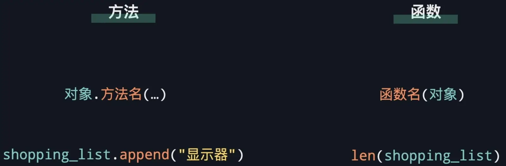
分支
简单分支
if语句格式
展开代码PYTHON
if<condition>:
<body><body>是一个或多个语句序列 简单条件基本形式<expr><relop><expr> <relop>是关系操作符<,<=,**,>=,>,!= 除数字外，字符或字符串也可以按照字典顺序用于条件比较 eval是Python的一个内置函数,这个函数的作用是,返回传入字符串的表达式的结果
二分支语法结构
展开代码PYTHON
if<condition>:
<statements>
else:
<statements>多分支决策
把一个复合语句放到另一个语句的结构之中称为嵌套。 python使用if-elif-else描述多分支决策。
展开代码PYTHON
if<condition1>:
<case1 statements>
elif<condition2>:
<case2 statements>
elif<condition3>:
<case3 statements>
……
else：
<default statements>异常处理
python使用try……except……，可使程序不因运行错误而崩溃。
展开代码PYTHON
try：
<body>
except <ErrorType1>:
<handler1>
except <ErrorType2>:
<handler2>
except:
<handler0>python的异常处理语句还可以使用else和finally关键字。
展开代码PYTHON
try：
<body>
except <ErrorType1>:
<handler1>
except <ErrorType2>:
<handler2>
except:
<handler0>
else：
<process_else>
finally:
<process_fiinally>非数值类型NameError，无效的表达式SyntaxError
求三者最大值
策略一：通盘比较 将每一个值和其他所有值比较以确定最大值 策略二：决策树 决策树方法可以避免冗余比较
展开代码PYTHON
if x1>=x2:
if x1>=x3
max=x1
else:
max=x3
else:保留最大值
if x2>=x3:
max=x2
else max=x3策略三：顺序处理 逐个扫描每个值，保留最大值。
展开代码PYTHON
max=x1
if x2>max:
max=x2
If x3>max:
max=x3策略四：Python python终极解决方案
展开代码PYTHON
def main():
x1,x2,x3=eval(input("please enter three values: "))
print("The largest value is",max(x1,x2,x3))
main()基本循环结构
for循环
for语句循环遍历整个序列的值。
展开代码PYTHON
for <var> in <sequence>
<body>
循环变量var遍历了队列中的每一个值，循环的语句体为每个值执行一次。
死循环和循环嵌套
C语言中死循环While true或While 1是单片机编程的普遍用法，死循环一直运行，等待中断程序发生然后去处理中断程序。
后测循环实现
Python没有后测循环语句，但可以通过while间接实现。 设定一初值，让循环至少执行一次，相当于后测循环。 break语句实现后测循环。
半路循环
展开代码PYTHON
While True：
number=eval（input（“Enter a positive number：“））
if x>=0:break
print（“The number you entered was not positive“）半路循环-哨兵
展开代码PYTHON
While true：
Get next date item
if the item is the sentinel：break
process the item布尔表达式
逻辑运算 布尔操作符：not，and，or（顺序高阶） 德摩根定律，not放入表达式后，and和or运算符之间发生变化。 not（a and b）** not a or not b not（a or b）** not a and not b
面向对象编程
OOP Object-Oriented Programming 类是对象的模版，对象是类的实例 对象的属性和方法
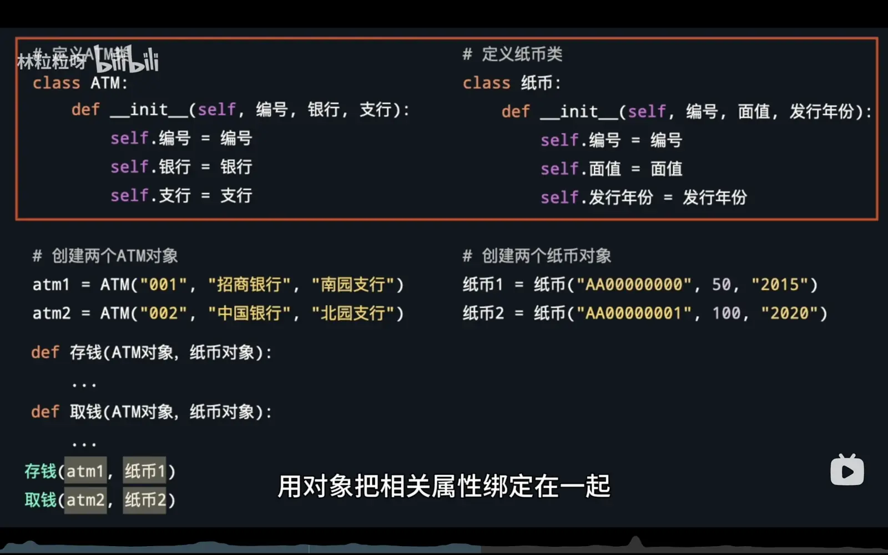
init构造函数，规定 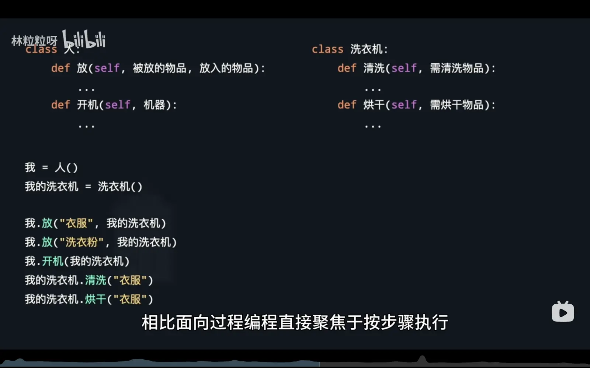
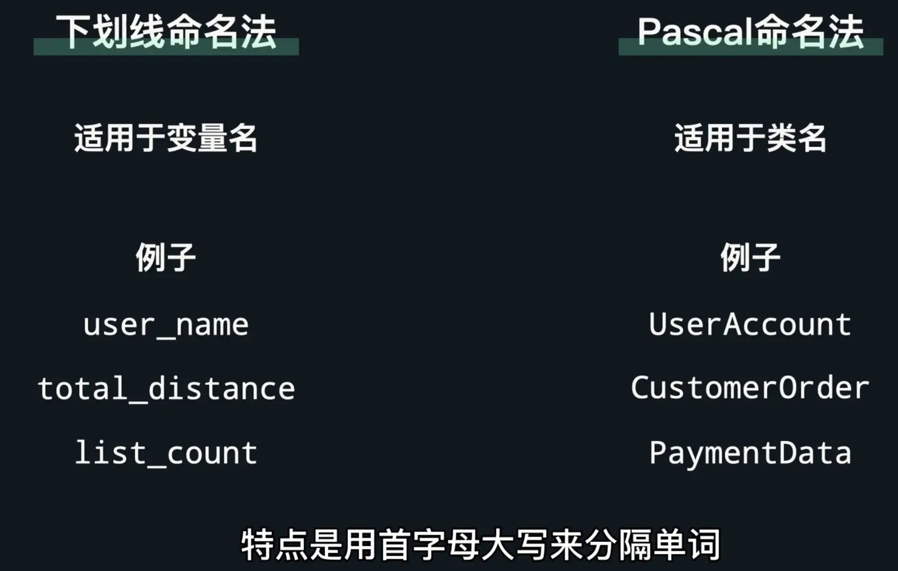
特性
封装
写类的人将内部实现细节隐藏，使用类的人只通过外部接口（方法）访问和使用。
继承
父子类
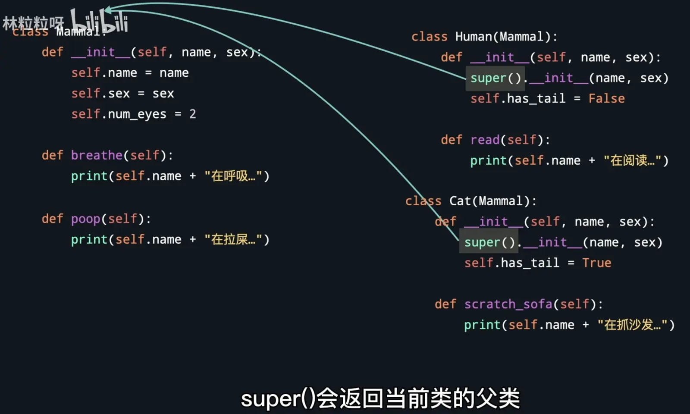
多态
子类方法不同，在不同字类里分别定义，但父类可直接执行方法，对象会自己表现不同。
实例
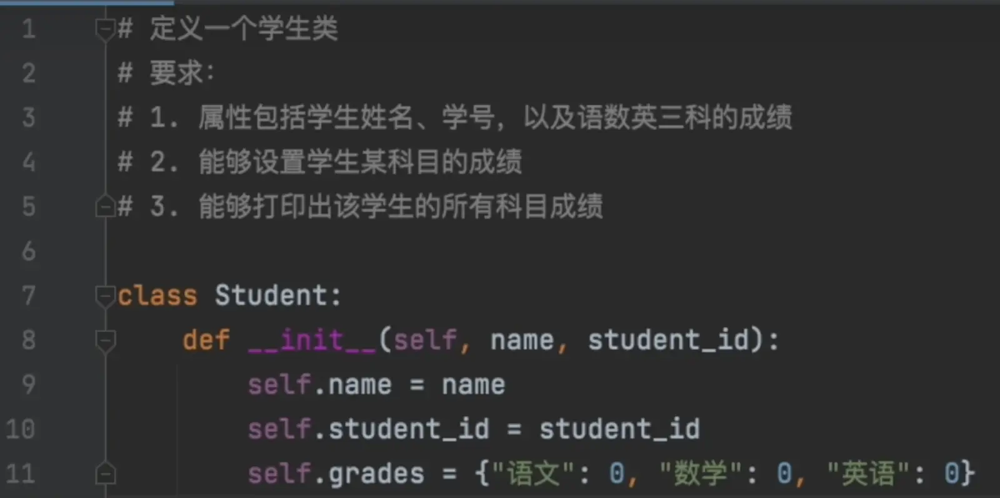
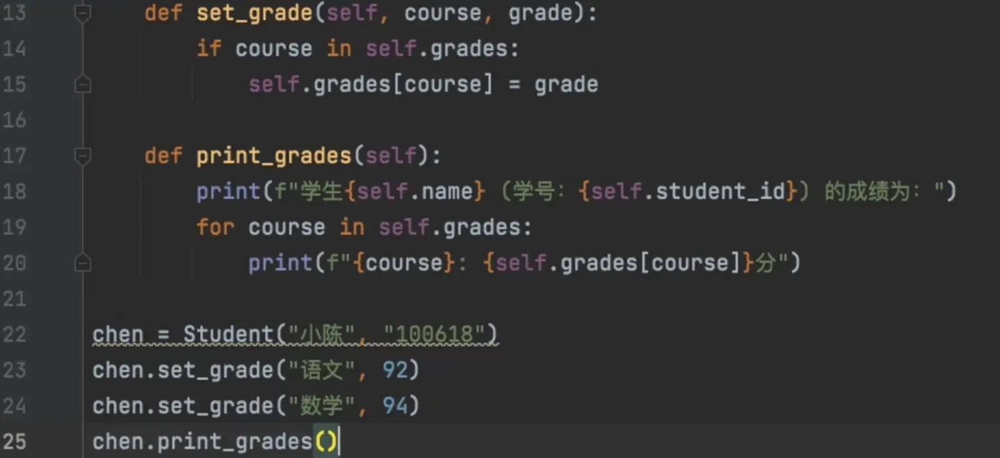
文件
储存在外部介质上的数据或信息集合。 有序的数据序列。 绝对路径：/home/data 相对路径： .当前所在的目录 ..上一层的父目录 ../..更上一次 ./data下一层子目录 ./可以省略，在同一目录下可以直接使用文件名
文件的基础
Python中字符串类型未编码 编码encode（） 解码decode（） Unicode，UTF-8编码，GBK编码（《汉字内码扩展规范》，双字节编码） 文件数据 文本文件（以ASCII码方式存储的文件。） 二进制文件（照片，音乐，视频，计算机程序等）
文件的基本处理
打开文件
建立磁盘上的文件与程序中的对象相关联 通过相关的文件对象获得
展开代码PYTHON
open（）
open("路径","模式",encoding="编码方式")
open("./data.txt","r",encoding="utf-8")模式参数不写默认是读取模式
文件操作
r读取模式(只读) w写入模式(只写)
读文件
read方法
展开代码PYTHON
f = open("./data.txt", "r", encoding="utf-8")
print(f.read()) # 会读全部的文件内容，并打印
print(f.read()) # 会读空字符串，并打印第一次read会记录到读到哪个位置，第二次read后面没有内容了就会返回空 read不要读很大内存的文件
展开代码PYTHON
print（f.read（10））# 会读第1-10个字节的文件内容
print（f.read（10））# 会读第11-20个字节的文件内容给read传参数，一次读多少字节
readline方法
根据换行符确定行结尾，换行符也会被读进内容。
展开代码PYTHON
f = open（"./data.txt"，"r"，encoding="utf-8"）
print（f.readline（））# 会读一行文件内容，并打印
print（f.readline（））# 会读一行文件内容，并打印如何确定调用次数/行数？ 读到结尾会返回空字符串。 一般用while循环实现
展开代码PYTHON
f = open（"./data.txt"."r"，encoding="utf-8"）
line = f.readline() # 读第一行
while line ！=""： # 判断当前行是否为空
print(line) # 不为空则打印当前行
line = f.readline() # 读取下一行readlines方法
展开代码PYTHON
f = open("./data.txt", "r", encoding="utf-8")
# readlines会读全部文件内容，并把每行作为列表元素返回
print(f.readlines())一般和for循环结合
展开代码PYTHON
f = open("./data.txt", "r", encoding="utf-8")
lines = f.readlines() # 把每行内容储存到列表里
for line in lines: # 遍历每行内容
print(line) # 打印当前行写文件
w写入，如果文件已经存在，就会把原本的文件内容清空。
展开代码PYTHON
with open("./data.txt", "w", encoding="utf-8") as f:
f.write("Hello!\n")
f.write("Yo000\n")a附加模式，不会清空原文件
展开代码PYTHON
with open("./data.txt", "a", encoding="utf-8") as f:
f.write("Hello!\n")
f.write("Yo000\n")同时读写
r+
展开代码PYTHON
with open("./data.txt","r+",encoding="utf-8") as f:
print(f. read())
f.write("hello!")关闭文件
展开代码PYTHON
f.close（）# 关闭文件，释放资源with关键字
展开代码PYTHON
with open("./data.txt") as f:
print（f.read（））# 对文件的操作文件会自动关闭。
异常
异常类型
长度之外的值对列表取索引，会产生indexError（索引错误）
用数字除以0时，会产生ZeroDivisionError（除零错误）
打开的文件不存在时，会产生FileNotFoundError（找不到文件错误）
让两个字符串做乘法，会产生TypeError（类型错误）
捕捉异常
用try,except语句捕捉异常
展开代码PYTHON
try:
user_weight = float（input（"请输入您的体重（单位：kg）："））
user_height = float（input（"请输入您的身高（单位：m）："））
user_BMI = user_weight / user_height ** 2
except ValueError:
print（"输入不为合理数字，请重新运行程序，并输入正确的数字。“）
except ZeroDivisionError:
print（“身高不能为零，请重新运行程序，并输入正确的数字。“）
except:
print（"发生了未知错误，请重新运行程序。"）
else:
print（"您的BMI值为：" + str（user_BMI））# 没有错误时会运行
finally:
print（"程序结束运行。"） # 无论发生错误与否都会运行测试
assert断言 AssertionError断言错误，程序直接中止
unittest
python单元测试库，单元测试是对软件中的最小可测试单元进行验证 一般把测试代码放在独立文件里 unittest会自动搜索test_开头的方法，而且只把test_开头的当成测试用例 引入：
展开代码PYTHON
from 文件名 import 函数名展开代码PYTHON
from 文件名 import 类名例子：
展开代码PYTHON
import unittest
from my_calculator import my_adder
class TestMyAdder(unittest.TestCase): # TestMyAdder是unittest.TestCase的子类
def test_positive_with_positive(self):
self.assertEqual(my_adder (5, 3), 8)
def test_negative_with_positive(self):
self.assertEqual(my_adder (-5, 3), -2)python -m unittest这个库就会自动搜寻所有继承了unittest库里TestCase类的子类,运行它们所有以test_开头的方法,然后展示测试结果，共运行了几个测试。每个点都代表一个测试通过，没有通过是F
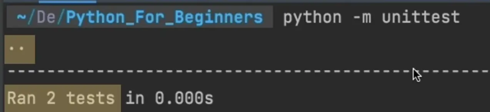
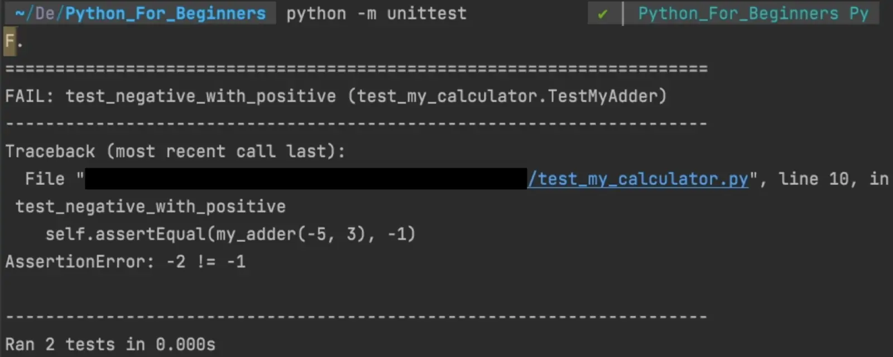
测试方法
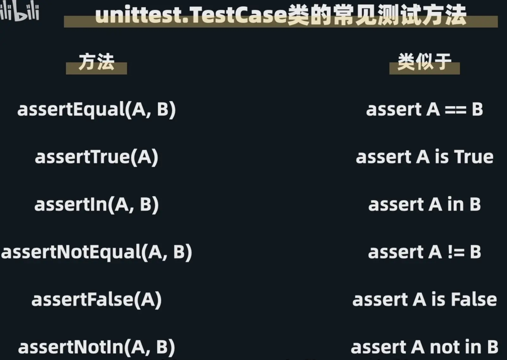
assertTrue可以代替这些所有方法展开代码PYTHON
assertTrue(2 not in [1, 3 - 1])
assertNotin(2, [1, 3 - 1])测试类
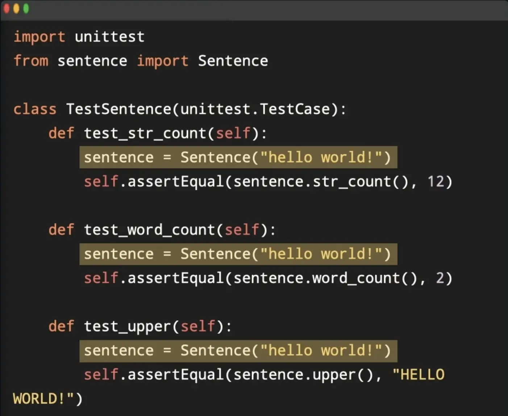
利用TestCase类里的setUp方法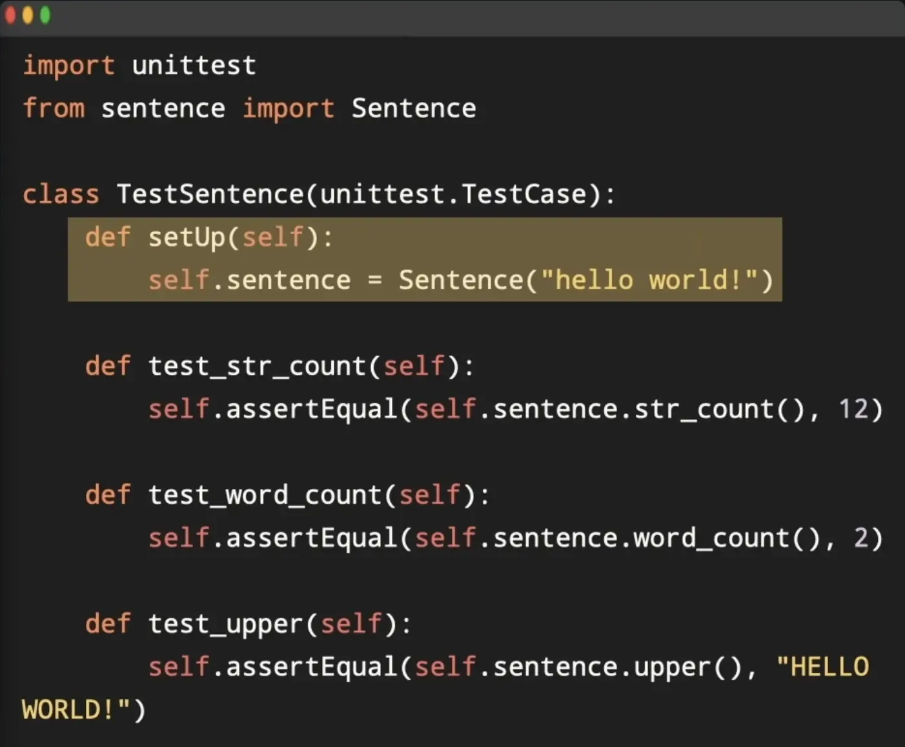
常用
random
展开代码PYTHON
random.randint(a, b)返回一个在 [a, b] 区间内的随机整数 N，即 a <= N <= b。 randrange(a, b) 生成 [a, b) 区间的数，不包含 b。 random.randrange(b) 从 0 开始 [0, b) random.random() 返回一个随机浮点数 [0.0, 1.0) random.uniform(a, b) 返回一个随机浮点数 [a, b] 或 [a, b)
数据分析三大库
matplotlib
数据可视化图表
matplotlib默认不支持中文 查看Mac支持的字体： fc-list 查看支持的字体 fc-list :lang=zh 查看支持的中文
Matplotlib三层结构
容器层
容器层主要由Canvas、Figure、Axes组成。 Canvas是位于最底层的系统层，在绘图的过程中充当画板的角色，即放置画布（Figure）的工具。 Figure是Canvas上方的第一层，也是需要用户来操作的应用层的第一层，在绘图的过程中充当画布的角色。 Axes是应用层的第二层，在绘图的过程中相当于画布上的绘图区的角色。
Figure：指整个图形（可以通过plt.figure（设置画布的大小和分辨率等）
Axes（坐标系）：数据的绘图区域
Axis（坐标轴）：坐标系中的一条轴，包含大小限制、刻度和刻度标签
特点为：
一个figure（图像）可以包含多个axes（坐标系/绘图区），但是一个axes只能属于一个figure。
一个axes（坐标系/绘图区）可以包含多个axis（坐标轴），包含两个即为2d坐标系，3个即为3d坐标系
辅助显示层
辅助显示层为Axes（绘图区）内的除了根据数据绘制出的图像以外的内容，主要包括Axes外观（facecolor）、边框线（spines）、坐标轴（axis）、坐标轴名称（axis label）、坐标轴刻度（tick）、坐标轴刻度标签（tick label）、网格线（grid）、图例（egend）、标题（title）等内容。 该层的设置可使图像显示更加直观更加容易被用户理解，但又不会对图像产生实质的影响。
图像层
图像层指Axes内通过plot、scatter、bar、histogram、pie等函数根据数据绘制出的图像。
折线图与基础绘图
matplotlib.pyplot模块 matplotlib.pytplot包含了一系列类似于matlab的画图函数。它的函数作用于当前图形（figure）的当前坐标系(axes).
展开代码PYTHON
import matplotlib.pyplot as plt例子
python title:"example" import matplotlib.pyplot as plt # 1. 创建画布 plt.figure(figsize=(20,8), dpi=100) # 2.绘制图像 x = [1,2,3] y = [4,5,6] plt.plot(x, y) #3.显示图像 plt. show() 画布属性 查看参数
展开代码PYTHON
help(plt.figure)
# figsize:大小，dpi:像素图片保存
展开代码PYTHON
plt.savefig(path)
plt.savefig("test.png")
# 放在展示前保存
# show会释放内存资源添加自定义x,y刻度 plt.xticks(x, **kwargs) x：要显示的刻度值 plt.yticks(y, **kwargs) y：要显示的刻度值
展开代码PYTHON
# 增加以下两行代码
# 构造x轴刻度标签
x_ticks_label = ["11点{}分".format(i) for i in x] # 相当于拼接
# 构造y轴刻度
y_ticks = range(40)
# 修改X，y轴坐标的刻度显示
# 第一个参数必须是数字，否则进行值替换
plt.xticks(x[::5], x_ticks_label[::5]) # 必须最开始传递的是数字
plt.yticks(y_ticks[::5])中文显示问题解决 下载中文字体（黑体，看准系统版本） 安装字体 linux下：拷贝字体到 usr/share/fonts 下：
展开代码BASH
sudo cp ~/SimHei.ttf /usr/share/fonts/SimHei.ttfwindows和mac下：双击安装 删除~/.matplotib中的缓存文件
展开代码BASH
cd ~/.matplotlib
rm -r *修改配置文件matplotlibrc
展开代码BASH
vi ~/.matplotlib/matplotlibrc将文件内容修改为：
展开代码BASH
font. family: sans-serif
font.sans-serif: SimHei
axes. unicode_minus: False添加网格显示
展开代码PYTHON
plt.grid(True, linestyle='--', alpha=0.5)
# 虚实线，透明度添加描述信息 添加x轴、y轴描述信息及标题
展开代码PYTHON
plt.xlabel（"时间"）
plt.ylabel（"温度"）
plt.title（"温度变化图示"）再添加曲线 多次plot实现
展开代码PYTHON
# 增加北京的温度数据
y_beijing = [random.uniform(1, 3) for i in x]
#绘制折线图
plt.plot(x, y_shanghai, label="上海")
# 使用多次plot可以画多个折线
plt.plot (x, y_beijing, color='r', linestyle='-', label="北京")
# 显示图例
plt.legend(loc="best") # 自动选择最优位置（默认值）我们仔细观察，用到了两个新的地方，一个是对于不同的折线展示效果，一个是添加图例。 图形风格
|—–|—–|
显示图例
"best" | 0 | 自动选择最优位置（默认值） |"upper right" | 1 | 右上角 |"upper left" | 2 | 左上角 |"lower left" | 3 | 左下角 |"lower right" | 4 | 右下角 |"right" | 5 | 右侧中间 |"center left" | 6 | 左侧中间 |"center right" | 7 | 右侧中间 |"lower center" | 8 | 底部中间 |"upper center" | 9 | 顶部中间 |"center" | 10 | 正中心 |多个坐标系显示-plt.subplots（面向对象的画图方法） matplotlib.pyplot.subplots（nrows=1, ncols=1， **fig_kw） 创建一个带有多个axes（坐标系/绘图区）的图
展开代码TXT
Parameters:
nrows, ncols: int, optional, default: 1, Number of rows/columns of the subplot grid.
**fig_kw : All additional keyword arguments are passed to the figure() call.
Returns:
f1g ：图对象
ax :
设置标题等方法不同：
set_xticks
set_yticks
set_xlabel
set_ylabel注意：plt.函数名()相当于面向过程的画图方法，axes.set_方法名()相当于面向对象的画图方法。
python title:"example" # 多个axes # 0.构造数据 x = range(60) y_shanghai = [random.uniform(15, 18) for i in x] y_beijing = [random.uniform(1, 14) for i in x] # 1. 创建画布 # plt.figure(fick-ze=(20, 8)) fig, axes = plt.subplots(nrows=1, ncols=2, figsize=(20, 8), dpi=100) # 2. 图像绘制 # plt.plot(x, y_shanghai, label="上海") # plt.plot(x, y_beijing, label="北京", linestyle="-_", color="r") axes[0].plot (x, y_shanghai, label="上海") axes[1].plot (x, y_beijing, label="北京", linestyle="--", color="r") # 2.1 添加X，y轴刻度 x_ticks_label = ["11点{}分".format(i) for i in x] y_ticks = range(40) # plt.xticks(x[: :5], x_ticks_label[::5]) # plt.yticks(y_ticks[::5]) axes[0].set_xticks(x[::5]) axes[0].set_yticks(y_ticks[::5]) axes[0].set_xticklabels(x_ticks_label[: :5]) axes[1].set_xticks(x[::5]) axes[1].set_yticks(y_ticks[::5]) axes[1].set_xticklabels(x_ticks_label[: :5]) # 2.2 添加网格显示 # plt.grid(True, linestyle="--", alpha=0.5) axes[0].grid(True, linestyle="--", alpha=0.5) axes[1].grid(True, linestyle="--", alpha=0.5) # 2.3 添加×，y轴描述和标题 # plt.xlabel(”时间”） # plt.ylabel(”温度”） # plt.title("中午11点--12点温度变化图”，fontsize=25） axes[0].set_xlabeL("时间") axes[0].set_ylabel("温度") axes[0].set_title("上海中午11点--12点温度变化图"，fontsize=25) axes[1].set_xlabel("时间") axes[1].set_ylabel("温度") axes[1].set_title("北京中午11点--12点温度变化图"，fontsize=25) # 2.4 显示图例 # plt.legend(loc=0) axes[0].legend(loc=0) axes[1].legend(loc=0) # 3.显示 plt.show()
常见图形绘制
折线图
展开代码PYTHON
plt.plot(x,y)散点图
展开代码PYTHON
plt.scatter(x,y)柱状图
展开代码PYTHON
plt.bar(x, width, align='center', **kwargs)
# x，柱宽，柱位置，颜色直方图
展开代码PYTHON
matplotlib.pyplot.hist(x, bins=None)
# 组距饼图
展开代码PYTHON
plt.pie(x,labels=,autopct=,colors)
# X：数量，自动算百分比
# labels：每部分名称
# autopct：占比显示指定%1.2f%%
# colors：每部分颜色Numpy
Numpy （Numerical Python）是一个开源的Python科学计算库，用于快速处理任意维度的数组。 Numpy支持常见的数组和矩阵操作。对于同样的数值计算任务，使用Numpy比直接使用Python要简洁的 多。 Numpy使用ndarray对象来处理多维数组，该对象是一个快速而灵活的大数据容器。 ndarray NumPy提供了一个N维数组类型ndarray，它描述了相同类型的“items”的集合。 运算速率更快。 列表
展开代码PYTHON
import numpy as np
# 创建ndarray
score = np.array([[80, 89, 86, 67, 79],
[78,97,89,67,81],
[90,94,78,67,74],
[91,91,90,67,69],
[76,87,75,67,86],
[70,79,84,67,84],
[94,92,93, 67,64],
[86, 85,83,67,80]])
score机器学习的最大特点就是大量的数据运算，那么如果没有一个快速的解决方案，那可能现在python也在机 器学习领域达不到好的效果。 Numpy专门针对ndarray的操作和运算进行了设计，所以数组的存储效率和输入输出性能远优于Python中 的嵌套列表，数组越大，Numpy的优势就越明显。 思考：ndarray为什么可以这么快？
内存块风格
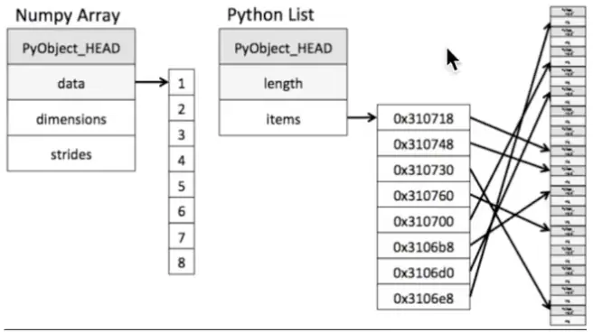
从图中我们可以看出ndarray在存储数据的时候，数据与数据的地址都是连续的，这样就给使得批量操作数 组元素时速度更快。 这是因为ndarray中的所有元素的类型都是相同的，而Python列表中的元素类型是任意的，所以ndarray在 存储元素时内存可以连续，而python原生list就只能通过寻址方式找到下一个元素，这虽然也导致了在通用 性能方面Numpy的ndarray不及Python原生list，但在科学计算中，Numpy的ndarray就可以省掉很多循环 语句，代码使用方面比Python原生list简单的多。ndarray支持并行化运算（向量化运算）
效率远高于纯Python代码 Numpy底层使用C语言编写，内部解除了GIL（全局解释器锁），其对数组的操作速度不受Python解释器的 限制，所以，其效率远高于纯Python代码。
性质
属性
ndarray.shape | 数组维度的元组 |ndarray.ndim | 数组维数 |ndarray.size | 数组中的元素数量 |ndarray.itemsize | 一个数组元素的长度（字节） |ndarray.dtype | 数组元素的类型 |形状
首先创建一些数组。
展开代码PYTHON
# 创建不同形状的数组
>>> a = np.array(`1.2,31,14,5,6`)
>>> b = np.array([1,2,3,4])
>>> с = np.array([[[1,2,3], [4,5,6]], [[1,2,3], [4,5,6]]])分别打印出形状
展开代码PYTHON
>>> a.shape
>>> b.shape
>>> c.shape
(2,3) # 二维数组
(4, ) # 一维数组
(2,2,3) # 三维数组类型
展开代码PYTHON
>>> type(score.dtype)
<type 'numpy.dtype'>dtype是numpy.dtype类型，先看看对于数组来说都有哪些类型
np.bool | 用一个字节存储的布尔类型 (True 或 False) | 'b' |np.int8 | 一个字节大小，-128 至 127 | 'i' |np.int16 | 整数，-32768 至 32767 | 'i2' |np.int32 | 整数， − 231 至 231 − 1 | 'i4' |np.int64 | 整数， − 263 至 263 − 1 | 'i8' |np.uint8 | 无符号整数，0 至 255 | 'u' |np.uint16 | 无符号整数，0 至 65535 | 'u2' |np.uint32 | 无符号整数，0 至 232 − 1 | 'u4' |np.uint64 | 无符号整数，0 至 264 − 1 | 'u8' |np.float16 | 半精度浮点数：16位，正负号1位，指数5位，精度10位 | 'f2' |np.float32 | 单精度浮点数：32位，正负号1位，指数8位，精度23位 | 'f4' |np.float64 | 双精度浮点数：64位，正负号1位，指数11位，精度52位 | 'f8' |np.complex64 | 复数，分别用两个32位浮点数表示实部和虚部 | 'c8' |np.complex128 | 复数，分别用两个64位浮点数表示实部和虚部 | 'c16' |np.object_ | python对象 | 'O' |np.string_ | 字符串 | 'S' |np.unicode_ | unicode类型 | 'U' |```python title:“example” import numpy as np
示例 1
a = np.array([[1, 2, 3], [4, 5, 6]], dtype=np.float32) print(a.dtype) # 输出: dtype(‘float32’)
示例 2
arr = np.array([‘python’, ‘tensorflow’, ‘scikit-learn’, ‘numpy’], dtype=np.string_) print(arr) # 输出: array([b’python’, b’tensorflow’, b’scikit-learn’, b’numpy’], dtype=‘|S12’)
展开代码代码
对于输出解释：
b 前缀代表Bytes（字节）
S (String)：代表这是一个字节字符串类型
12 (长度)：NumPy 会自动扫描数组中所有的字符串，找到最长的一个。为了保证数组中每个元素占用的内存空间一致，NumPy 把所有元素的长度都定为 12。
- 较短的字符串（如 'numpy'）在内部存储时会在后面补空字节，但在显示时仍保持原样。
| (字节序)：这个符号代表字节序（Endianness）。对于字符串类型来说，字节序是不适用的（因为它是单字节序列），所以用 | 表示“不适用”或“忽略”。
### 基本操作
#### 生成数组的方法
##### 生成0和1的数组
* `np.ones(shape[, dtype, order])`
* `np.ones_like(a[, dtype, order, subok])`
* `np.zeros(shape[, dtype, order])`
* `np.zeros_like(a[, dtype, order, subok])`
a是按照已有的数组进行生成。
```python
>>> zero = np.zeros([3, 4])
array([[ 0., 0., 0., 0.],
[ 0., 0., 0., 0.],
[ 0., 0., 0., 0.]])
>>> one = np.ones(zero)这是图片内容的 Markdown 格式：
从现有数组生成
生成方式
np.array(object[, dtype, copy, order, subok, ndmin])np.asarray(a[, dtype, order])
展开代码PYTHON
# 列表形式
a = np.array([[1,2,3],[4,5,6]])
# 从现有的数组当中创建
a1 = np.array(a)
# 相当于索引的形式，并没有真正的创建一个新的
a2 = np.asarray(a)np.array (深拷贝) 它会创建一个全新的对象，并将原数组的数据完整地复制一份到新内存中。 区别：如果你修改了原始数组 a，a1 不会发生任何变化。它们是独立的。 np.asarray (浅拷贝/引用) 如果输入已经是一个 NumPy 数组，它不会创建新副本，而是直接指向原数组的内存地址（相当于起了一个别名）。 区别：如果你修改了原始数组 a，a2 也会随之改变。 这是图片内容的 Markdown 格式：
生成固定范围的数组
np.linspace (start, stop, num, endpoint)生成等间隔的序列
展开代码TXT
- start：序列的起始值
- stop：序列的终止值
- num：要生成的等间隔样例数量，即多少组。默认为 50
- endpoint：序列中是否包含 stop 值，默认为 True展开代码PYTHON
# 生成等间隔的数组
np.linspace(0, 100, 11)返回结果： array([ 0., 10., 20., 30., 40., 50., 60., 70., 80., 90., 100.])
其它的还有
numpy.arange(start, stop, step, dtype)numpy.logspace(start, stop, num)
展开代码PYTHON
np.arange(10, 50, 2)返回结果： array([10, 12, 14, 16, 18, 20, 22, 24, 26, 28, 30, 32, 34, 36, 38, 40, 42, 44, 46, 48])
展开代码PYTHON
# 生成 10^x
np.logspace(0, 2, 3)返回结果： array([ 1., 10., 100.])
np.logspace 的作用是生成一个对数等比数列。 在代码 np.logspace(0, 2, 3) 中：
第一个参数
0：起始指数（start）。第二个参数
2：终止指数（stop）。第三个参数
3：生成样本的数量（num）。默认参数
base=10：底数（图片中没写，但默认就是 10）。 这是图片内容的 Markdown 格式：
生成随机数组
np.random模块 均匀分布np.random.rand(d0, d1, ..., dn)返回 [0.0, 1.0) 内的一组均匀分布的数。np.random.uniform(low=0.0, high=1.0, size=None)功能：从一个均匀分布 [low, high) 中随机采样，注意定义域是左闭右开，即包含 low，不包含 high。 参数介绍：low：采样下界，float 类型，默认值为 0；
high：采样上界，float 类型，默认值为 1；
size：输出样本数目，为 int 或元组 (tuple) 类型。例如，size = (m, n, k)，则输出 m × n × k 个样本，缺省时输出 1 个值。 返回值：
ndarray类型，其形状和参数size中描述一致。
np.random.randint(low, high=None, size=None, dtype='l')从一个均匀分布中随机采样，生成一个整数或 N 维整数数组。 取数范围：若high不为None时，取 [low, high) 之间随机整数，否则取值 [0, low) 之间随机整数。
正态分布N(μ, σ) 正态分布特点 μ 决定了其位置，其标准差 σ 决定了分布的幅度。当 μ = 0, σ = 1 时的正态分布是标准正态分布。 $$f(x) = \frac{1}{\sigma\sqrt{2\pi}} e^{-\frac{(x-\mu)^2}{2\sigma^2}}$$
方差 是在概率论和统计方差衡量一组数据时离散程度的度量 $$s^2 = \frac{(x_1 - M)^2 + (x_2 - M)^2 + (x_3 - M)^2 + \cdots + (x_n - M)^2}{n}$$ 其中 M 为平均值，n 为数据总个数，S 为标准差，S2 可以理解一个整体为方差 $$\sigma = \sqrt{\frac{1}{N} \sum_{i=1}^{N} (x_i - \mu)^2}$$
标准差与方差的意义 可以理解成数据的一个离散程度的衡量
正态分布创建方式
np.random.randn(d0, d1, ..., dn)功能：从标准正态分布中返回一个或多个样本值np.random.normal(loc=0.0, scale=1.0, size=None)loc: float 此概率分布的均值（对应着整个分布的中心centre）
scale: float 此概率分布的标准差（对应于分布的宽度，scale越大越矮胖，scale越小，越瘦高）
size: int or tuple of ints 输出的shape，默认为None，只输出一个值
np.random.standard_normal(size=None)返回指定形状的标准正态分布的数组。
展开代码PYTHON
x2 = np.random.normal(1.75, 1, 100000000)返回结果：
展开代码PYTHON
array([2.90646763, 1.46737886, 2.21799024, ..., 1.56047411, 1.87969135,
0.9028096 ])数组索引，切片
案例：随机生成 8 只股票 2 周的交易日涨幅数据 8 只股票，两周（10天）的涨跌幅数据，如何获取？
两周的交易日数量为：2 × 5 = 10
随机生成涨跌幅在某个正态分布内，比如均值 0，方差 1
股票涨跌幅数据的创建
展开代码PYTHON
# 创建符合正态分布的 8 只股票 10 天的涨跌幅数据
stock_change = np.random.normal(0, 1, (8, 10))索引、切片
展开代码PYTHON
# 前两天
stock_change[0:8,0:2]形状修改
让刚才的股票行、日期列反过来，变成日期行，股票列
ndarray.reshape(shape[, order])Returns an array containing the same data with a new shape.
展开代码PYTHON
# 在转换形状的时候，一定要注意数组的元素匹配
stock_change.reshape([10, 8])
stock_change.reshape([-1, 20]) # 数组的形状被修改为：(4, 20), -1: 表示通过待计算ndarray.resize(new_shape[, refcheck])Change shape and size of array in-place.
展开代码PYTHON
stock_change.resize([10, 8])reshape vs resize：
展开代码代码
* `reshape`：产生一个**新**的数组，原数组 `stock_change` 的形状其实没有变。
* `resize`：直接在**原数组**上修改形状（in-place），没有返回值。ndarray.T数组的转置- 将数组的行、列进行互换
展开代码PYTHON
stock_change.shape
# (8, 10)
stock_change.T.shape
# (10, 8)类型修改
ndarray.astype(type)
展开代码PYTHON
stock_change.astype(np.int32)ndarray.tostring([order])或者ndarray.tobytes([order])Construct Python bytes containing the raw data bytes in the array.- 转换成 bytes
展开代码PYTHON
arr = np.array([[[1, 2, 3], [4, 5, 6]], [[12, 3, 34], [5, 6, 7]]])
arr.tostring()astype：这是最常用的类型转换方法（例如将浮点数转为整数）。注意它会返回一个新数组，不会修改原数组。tostring/tobytes：将数组转换为二进制字节流。这在将数据写入文件或通过网络传输时很有用。注意：tostring在较新版本的 NumPy 中已弃用，建议改用tobytes。
数组的去重
np.unique
展开代码PYTHON
temp = np.array([[1, 2, 3, 4], [3, 4, 5, 6]])
# 运行去重函数
>>> np.unique(temp)
array([1, 2, 3, 4, 5, 6])功能：
np.unique()的作用是找出数组中所有唯一的值，并剔除重复项。自动展平：注意看例子中原数组
temp是一个 2x4 的二维数组，但np.unique的返回结果变成了一个一维数组。这是因为在默认情况下，该函数会将多维数组先“压扁”（flatten）再进行去重。自动排序：去重后的结果会按照从小到大的顺序自动排列。
运算
逻辑运算
展开代码PYTHON
# 重新生成 8 只股票 10 个交易日的涨跌幅数据
>>> stock_change = np.random.normal(0, 1, (8, 10))
# 截取前 5 只股票的前 5 天数据（方便观察结果）
>>> stock_change = stock_change[0:5, 0:5]
# 逻辑判断：如果涨跌幅大于 0.5 就标记为 True，否则为 False
>>> stock_change > 0.5
array([[ True, False, False, True, False],
[ True, True, False, False, False],
[ True, False, True, False, True],
[False, True, False, False, False],
[False, False, False, True, True]])
# BOOL 赋值：将满足条件的（> 0.5 的）位置统一设置为指定的值 1 —— 这种方式叫“布尔索引”
>>> stock_change[stock_change > 0.5] = 1
# 打印赋值后的结果
>>> stock_change
array([[ 1. , -0.72404879, -1.2045773 , 1. , 0.3869043 ],
[ 1. , 1. , 0.20815446, -1.67860823, 0.06612823],
[ 1. , 0.42753488, 1. , -0.24375089, 1. ],
[-0.971945 , 1. , -0.95444661, -0.2602084 , -0.48736497],
[-0.32183056, -0.92544956, -0.42126604, 1. , 1. ]])广播机制的逻辑比较 (stock_change > 0.5)： NumPy 允许你直接用数组和单个数字做比较。它会对数组中的每一个元素进行检查，返回一个形状完全相同、但内容全是 True 或 False 的布尔型数组。 这是图片内容的 Markdown 格式以及详细的代码解释：
通用判断函数
np.all()
展开代码PYTHON
# 判断 stock_change[0:2, 0:5] 是否全是上涨的
>>> np.all(stock_change[0:2, 0:5] > 0)
Falsenp.any()
展开代码PYTHON
# 判断前 5 只股票这段期间是否有上涨的
>>> np.any(stock_change[0:5, :] > 0)
Truenp.where（三元运算符）
通过使用 np.where 能够进行更加复杂的运算。
np.where()
展开代码PYTHON
# 判断前四个股票前四天的涨跌幅 大于0的置为1，否则为0
temp = stock_change[:4, :4]
np.where(temp > 0, 1, 0)- 复合逻辑需要结合
np.logical_and和np.logical_or使用
展开代码PYTHON
# 判断前四个股票前四天的涨跌幅 大于0.5并且小于1的，换为1，否则为0
np.where(np.logical_and(temp > 0.5, temp < 1), 1, 0)
# 判断前四个股票前四天的涨跌幅 大于0.5或者小于-0.5的，换为1，否则为0
np.where(np.logical_or(temp > 0.5, temp < -0.5), 1, 0)统计运算
统计指标
min(a[, axis, out, keepdims])- Return the minimum of an array or minimum along an axis. (返回数组的最小值或沿轴的最小值)
max(a[, axis, out, keepdims])- Return the maximum of an array or maximum along an axis. (返回数组的最大值或沿轴的最大值)
median(a[, axis, out, overwrite_input, keepdims])- Compute the median along the specified axis. (计算沿指定轴的中位数)
mean(a[, axis, dtype, out, keepdims])- Compute the arithmetic mean along the specified axis. (计算沿指定轴的算术平均值)
std(a[, axis, dtype, out, ddof, keepdims])- Compute the standard deviation along the specified axis. (计算沿指定轴的标准差)
var(a[, axis, dtype, out, ddof, keepdims])- Compute the variance along the specified axis. (计算沿指定轴的方差)
案例：股票涨跌幅统计运算 进行统计的时候，axis 轴的取值并不一定，NumPy 中不同的 API 轴的值都不一样。在这里，axis 0 代表列，axis 1 代表行去进行统计。
展开代码PYTHON
# 接下来对于这 4 只股票的 4 天数据，进行一些统计运算
# 指定行 (axis=1) 去统计，即计算每一只股票在这一段时间内的指标
print("前四只股票前四天的最大涨幅 {}".format(np.max(temp, axis=1)))
# 使用 min, std, mean
print("前四只股票前四天的最大跌幅 {}".format(np.min(temp, axis=1)))
print("前四只股票前四天的波动程度 {}".format(np.std(temp, axis=1)))
print("前四只股票前四天的平均涨跌幅 {}".format(np.mean(temp, axis=1)))如果需要统计出哪一只股票在某个交易日的涨幅最大或者最小？
np.argmax(temp, axis=)np.argmin(temp, axis=)
展开代码PYTHON
# 获取股票指定哪一天的涨幅最大
print("前四只股票前四天内涨幅最大 {}".format(np.argmax(temp, axis=1)))
print("前四天一天内涨幅最大的股票 {}".format(np.argmax(temp, axis=0)))np.max()：返回的是具体的数值。np.argmax()：返回的是最大值所在的索引（位置）。
数组间运算
数组与数的运算
展开代码PYTHON
arr = np.array([[1, 2, 3, 2, 1, 4], [5, 6, 1, 2, 3, 1]])
arr + 1
arr / 2
# 可以对比python列表的运算，看出区别
a = [1, 2, 3, 4, 5]
a * 3数组与数组的运算
展开代码PYTHON
arr1 = np.array([[1, 2, 3, 2, 1, 4], [5, 6, 1, 2, 3, 1]])
arr2 = np.array([[1, 2, 3, 4], [3, 4, 5, 6]])NumPy 数组 vs Python 列表
Python 列表 (
a * 3)：它不会把列表里的数字乘以 3，而是把整个列表复制并拼接 3 遍。结果会变成[1, 2, 3, 4, 5, 1, 2, 3, 4, 5, 1, 2, 3, 4, 5]。NumPy 数组：执行的是数学意义上的向量/矩阵运算。
广播机制
执行 broadcast 的前提在于，两个 ndarray 执行的是 element-wise 的运算，Broadcast 机制的功能是为了方便不同形状的 ndarray（numpy 库的核心数据结构）进行数学运算。 当操作两个数组时，numpy 会逐个比较它们的 shape（构成的元组 tuple），只有在下述情况下，两个数组才能够进行数组与数组的运算：
维度相等
shape（其中相对应的一个地方为 1）
例如：
展开代码TEXT
Image (3d array): 256 x 256 x 3
Scale (1d array): 3
Result (3d array): 256 x 256 x 3
A (4d array): 9 x 1 x 7 x 1
B (3d array): 8 x 1 x 5
Result (4d array): 9 x 8 x 7 x 5
A (2d array): 5 x 4
B (1d array): 1
Result (2d array): 5 x 4
A (3d array): 15 x 3 x 5
B (1d array): 15 x 1 x 1
Result (3d array): 15 x 3 x 5当两个数组的大小对不上时，NumPy 会尝试把那些只有 1 的维度“拉伸”开，直到和另一个数组的大小一致。
判定的口诀： 从后往前看每一个维度（从右往左）：
如果两个数相等，没问题。
如果其中一个是 1，也没问题，它会把自己复制很多份来匹配另一个。
如果两个数不等且都不为 1，对不起，报错！ 案例分析（以例子 2 为例）：
A 是
9 x 1 x 7 x 1B 是
8 x 1 x 5（位数不够的前面补 1，变成1 x 8 x 1 x 5）
矩阵运算
矩阵乘法api:
np.matmulnp.dot
展开代码PYTHON
>>> a = np.array([[80, 86],
[82, 80],
[85, 78],
[90, 90],
[86, 82],
[82, 90],
[78, 80],
[92, 94]])
>>> b = np.array([[0.7], [0.3]])
>>> np.matmul(a, b)
array([[81.8],
[81.4],
[82.9],
[90. ],
[84.8],
[84.4],
[78.6],
[92.6]])
>>> np.dot(a, b)
array([[81.8],
[81.4],
[82.9],
[90. ],
[84.8],
[84.4],
[78.6],
[92.6]])矩阵乘法不是对应位置相乘，而是“行乘列”**。 np.matmul 与 np.dot 的区别
np.matmul：专门用于矩阵乘法。它不支持标量（单个数字）乘法。在处理高维矩阵（3维及以上）时，它的行为更符合线性代数的逻辑。np.dot：更通用。如果是一个数乘数组，它也可以。但在处理两个矩阵相乘时，结果通常与matmul一致。
Pandas
数据处理、读取文件方便、封装了Matplotlib、Numpy的画图和计算
引入
展开代码PYTHON
# 导入pandas
import pandas as pd在 numpy 当中创建的股票涨跌幅数据形式
展开代码PYTHON
# 创建一个符合正态分布的 10 个股票 5 天的涨跌幅数据
stock_change = np.random.normal(0, 1, (10, 5))
# 返回结果：
array([[-0.06544031, -1.30931491, -1.45451514, 0.57973008, 1.48602405],
[-1.73216741, -0.83413717, 0.45861517, -0.80391793, -0.46878575],
[ 0.21805567, 0.19901371, 0.7134683 , 0.5484263 , 0.38623412],
[-0.42207879, -0.33702398, 0.42328531, -1.23079202, 1.32843773],
[-1.72530711, 0.07591832, -1.91708358, -0.16535818, 1.07645091],
[-0.81576845, -0.28675278, 1.20441981, 0.73365951, -0.06214496],
[-0.98820861, -1.01815231, -0.95417342, -0.81538991, 0.50268175],
[-0.10034128, 0.61196204, -0.06850331, 0.74738433, 0.143011 ],
[ 1.00026175, 0.34241958, -2.2529711 , 0.93921064, 1.14080312],
[ 2.52064693, 1.55384756, 1.72252984, 0.61270132, 0.60888092]])Numpy无索引 NumPy 负责底层的高效数学运算，而 Pandas 负责高层的业务逻辑和数据管理。
Pandas 的数据结构
展开代码PYTHON
# 使用 Pandas 中的数据结构
stock_day_rise = pd.DataFrame(stock_change)给股票涨跌幅数据增加行列索引，显示效果更佳 效果： （展示了一个带有日期作为列标题、股票编号作为行索引的表格化数据结构）
增加行索引
展开代码PYTHON
# 构造行索引序列
stock_code = ['股票' + str(i) for i in range(stock_day_rise.shape[0])]
# 添加行索引
data = pd.DataFrame(stock_change, index=stock_code)stock_day_rise.shape[0]：假设stock_day_rise是一个已有的数组或矩阵。.shape返回一个元组(行数, 列数)。shape[0]也就是获取数据的行数（即有多少支股票）。['股票' + str(i) for i in range(...)]：一个 Python 的列表推导式。它循环遍历行数，生成形如['股票0', '股票1', '股票2'...]的列表。pd.DataFrame(stock_change, index=stock_code)：使用基础数据stock_change创建 DataFrame，并通过index=参数将刚才生成的列表设定为每一行的标签。
增加列索引
股票的日期是一个时间的序列，要实现从前往后的时间还要考虑每月的总天数等。 使用pd.date_range()：用于生成一组连续的时间序列
展开代码PYTHON
date_range(start=None, end=None, periods=None, freq='B')
start:开始时间
end:结束时间
periods:时间天数
freq:递进单位，默认1天，'B'默认略过周末Pandas 专门用于处理时间序列的强大工具：pd.date_range()。 一个自动生成日期序列的函数，核心参数如下：
start: 序列的起始日期（如 ‘2017-01-01’）。
end: 序列的结束日期（通常 start, end, periods 给出两个即可推算第三个）。
periods: 想要生成的日期总数（天数/期数）。
freq: 频率（递进单位）。默认是 ‘D’ (Calendar Day，日历日)。
'B'(Business Day，工作日)，这个参数非常实用，它会自动跳过周六和周日，完美契合股票交易日的特性。
展开代码PYTHON
# 生成一个时间的序列，略过周末非交易日
date = pd.date_range('2017-01-01', periods=stock_day_rise.shape[1], freq='B')
# index代表行索引，columns代表列索引
data = pd.DataFrame(stock_change, index=stock_code, columns=date)stock_day_rise.shape[1]：获取数据的列数，这代表这批数据总共有多少个交易日的数据。date = pd.date_range('2017-01-01', periods=stock_day_rise.shape[1], freq='B')：从 2017年1月1日开始，生成指定数量（即数据的列数）的工作日序列，自动跳过周末。data = pd.DataFrame(stock_change, index=stock_code, columns=date)：最终步骤。将原始数据stock_change包装成 DataFrame，同时使用index=赋予行名（股票代码），使用columns=赋予列名（交易日期）。
DataFrame
DataFrame结构
DataFrame对象既有行索引，又有列索引。
行索引，表明不同行，横向索引，叫index，0轴，axis=0
列索引，表名不同列，纵向索引，叫columns，1轴，axis=1
DatatFrame的属性
- shape
展开代码PYTHON
data.shape
# 结果
(10, 5)- index DataFrame的行索引列表
展开代码PYTHON
data.index
Index(['股票0', '股票1', '股票2', '股票3', '股票4', '股票5', '股票6', '股票7', '股票8', '股票9'])- columns DataFrame的列索引列表
展开代码PYTHON
data.columns
DatetimeIndex(['2017-01-02', '2017-01-03', '2017-01-04', '2017-01-05',
'2017-01-06'],
dtype='datetime64[ns]', freq='B')- values 直接获取其中array的值
展开代码PYTHON
data.values- T 转置
展开代码PYTHON
data.T- head(5): 显示前5行内容 如果不补充参数，默认5行。填入参数N则显示前N行
展开代码PYTHON
data.head(5)- tail(5): 显示后5行内容 如果不补充参数，默认5行。填入参数N则显示后N行
展开代码PYTHON
data.tail(5)DatatFrame索引的设置
修改行列索引值
展开代码PYTHON
stock_code = ["股票_" + str(i) for i in range(stock_day_rise.shape[0])]
# 必须整体全部修改
data.index = stock_code注意：以下修改方式是错误的
展开代码PYTHON
# 错误修改方式
data.index[3] = '股票_3'重设索引
reset_index(drop=False)
设置新的下标索引
drop:默认为False，不删除原来索引，如果为True,删除原来的索引值
展开代码PYTHON
# 重置索引,drop=False
data.reset_index()以某列值设置为新的索引
set_index(keys, drop=True)
keys : 列索引名成或者列索引名称的列表
drop : boolean, default True.当做新的索引，删除原来的列
设置新索引案例 1、创建
展开代码PYTHON
df = pd.DataFrame({'month': [1, 4, 7, 10],
'year': [2012, 2014, 2013, 2014],
'sale': [55, 40, 84, 31]})展开代码TEXT
month sale year
0 1 55 2012
1 4 40 2014
2 7 84 2013
3 10 31 20142、以月份设置新的索引
展开代码PYTHON
df.set_index('month')
sale year
month
1 55 2012
4 40 2014
7 84 2013
10 31 20143、设置多个索引，以年和月份
展开代码PYTHON
df.set_index(['year', 'month'])
sale
year month
2012 1 55
2014 4 40
2013 7 84
2014 10 31注：DataFrame变成了一个具有MultiIndex的DataFrame。
Multilndex与Panel
基本操作
为了更好的理解基本操作，先读取一个真实的股票数据。关于文件操作，后面在介绍，这里只先用一下API
展开代码PYTHON
# 读取文件
data = pd.read_csv("./data/stock_day.csv")
# 删除一些列，让数据更简单些，再去做后面的操作
data = data.drop(["ma5","ma10","ma20","v_ma5","v_ma10","v_ma20"], axis=1)索引操作
Numpy当中使用索引选取序列和切片选择，pandas也支持类似的操作，也可以直接使用列名、行名称，甚至组合使用。
直接使用行列索引(先列后行)
获取’2018-02-27’这天的’close’的结果
展开代码PYTHON
# 直接使用行列索引名字的方式（先列后行）
data['open']['2018-02-27']
23.53
# 不支持的操作
# 错误
data['2018-02-27']['open']
# 错误
data[:1, :2]结合loc或者iloc使用索引
先行后列 获取从’2018-02-27’:‘2018-02-22’, ’open’的结果
展开代码PYTHON
# 使用loc:只能指定行列索引的名字
data.loc['2018-02-27':'2018-02-22', 'open']展开代码TEXT
2018-02-27 23.53
2018-02-26 22.80
2018-02-23 22.88
Name: open, dtype: float64展开代码PYTHON
# 使用iloc可以通过索引的下标去获取
# 获取前100天数据的'open'列的结果
data.iloc[0:100, 0:2].head()展开代码TEXT
open high close low
2018-02-27 23.53 25.88 24.16 23.53
2018-02-26 22.80 23.78 23.53 22.80
2018-02-23 22.88 23.37 22.82 22.71赋值操作
对DataFrame当中的close列进行重新赋值为1
展开代码PYTHON
# 直接修改原来的值
data['close'] = 1
# 或者
data.close = 1排序
排序有两种形式，一种对于索引进行排序，一种对于内容进行排序
使用df.sort_values(by=, ascending=)
单个键或者多个键进行排序,默认升序
ascending=False:降序
ascending=True:升序